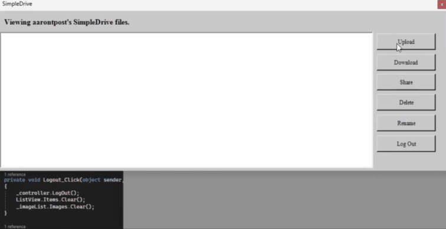

SimpleDrive - Spring 2024
I designed and developed a Windows Forms app that integrates with AWS services. Users are able to create their own account and securely upload, download, and share files in the cloud.

I designed and developed a Windows Forms app that integrates with AWS services. Users are able to create their own account and securely upload, download, and share files in the cloud.
I designed and developed four short puzzle games using C# and Unity. Along with programming, I created animations, 3D and 2D art assets, particle effects, and sound effects for each project. Each game was rigorously playtested to tweak mechanics and visual elements.

I designed and developed a prototype of an educational simulation with Unity and C# that intends to teach abstract physics concepts to college students. Users place down components including magnets and detector plates and fire silver atoms through the setup.
I created four file transfer programs with Python that send files over the internet using UDP and TCP. I implemented an alternating-bit protocol that retransmits lost packets.
I created a Minecraft plugin using Java that transforms a multiplayer server into a recreation of the mobile game Clash of Clans. Players can build their own island, attack offline players' bases, and collect resources.

I designed and developed a prototype of an educational game with Unity and C# that intends to teach abstract physics concepts to college students. Users play as squirrels and inspect acorns that have quantum properties.

I created an interpreter and tokenizer in Java for the toy language CORE. The interpreter is full-featured; it parses, pretty-prints, and executes code.
This is a sample program written in CORE that my interpreter can execute.
I created a predator and prey simulation with Unity and C#. The agents use vision based pathfinding to avoid obstacles (done with raycasting). The predators will chase prey if they are within their vision.

I created a 3D Pacman clone with Unity and C# on a team of three.

I created a unity project that generates randomized mazes with C#. The mazes are generated with the randomized Kruskall's algorithm.
I created a zelda game with Monogame and C#. I lead a team of six students, and we planned and executed five Agile sprints. Focused on high quality code; wrote weekly code reviews. Managed tight deadlines and debugged difficult problems with peers' code.

I designed a database for an imaginary client. I followed the complete design process, including creating an (E)ERD, relational schema, and functional SQL database.
I created a python program that integrates with the Youtube API. It checks the subscriber count of a given Youtube channel every few seconds and displays the count to a seven segment display that is connected to a Raspberry Pi. I made two videos documenting the project, including programming and creating an enclosure.